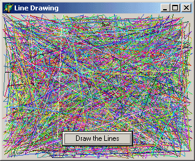
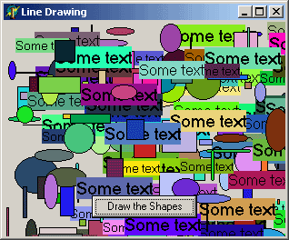

GDI: графика в Delphi - Часть I.Автор: Alistair Keys Жаргон GDI. Начнём с того, что GDI обычно не используют для создания крутых графических эффектов, для этого есть DirectX, OpenGL, или любые графические библиотеки (такие как: DelphiX, FastLib, DIBUltra, Graphics32...). Однако, для создание простых эффектов с минимальными усилиями GDI вполне сгодится. С GDI тесно связана ещё одна аббревиатура - DC ("Device Context" - контекст устройства). Это то, на чём мы рисуем, и в Delphi контекст устройства представлен как TCanvas. Идея контекста устройства заключается в том, что это универсальное устройство вывода, поэтому можно использовать одинаковые функции как для экрана, так и для принтера. Все графические функции в Delphi являются надстройками над стандартными GDI функциями Windows. Позже мы поговорим об этих функциях. А теперь самое время приступить к рассмотрению того, как устроен GDI. Ниже, в таблице, представлены некоторые важные классы:
Однако, пора переходить от слов к делу, а именно, начать рисовать линии и фигуры. Рисование линий Сперва необходимо чётко уяснить, что координата (0,0) это верхний левый угол экрана. То есть значения по оси y увеличиваются вниз экрана. Соответственно, координата (0, 50) означает, что мы просто отступили на 50 пикселей от верха экрана. Самое главное, что надо знать при рисовании линий и фигур, это различие между пером (Pen) и кистью (Brush). Всё очень просто: перо (Pen) используется при рисовании линий или рамок, а кисть (Brush) для заполнения фигуры. Ниже приведены две функции, которые используются для рисования линий и обе принадлежат TCanvas:
Эффект перемещения точки начала рисования линии так же достигается при помощи установки своства PenPos в канвасе... например, "Canvas.PenPos.x := 20;", "Canvas.PenPos.y := 50", или "Canvas.PenPos := Point(20,50);". По умолчанию, точка начала рисования установлена в (0,0), то есть, если сразу вызвать "Canvas.LineTo(100,100);" то будет нарисована линия из точки (0,0) в точку (100, 100). Точка начала рисования автоматически переместится в (100, 100), то есть, если выполнить команду "Canvas.LineTo(200, 100);", то следующая линия будет нарисована из точки (100, 100) в (200, 100). Поэтому, если мы хотим рисовать линии несоединённые друг с другом, то придётся воспользоваться методом MoveTo. Линия, нарисованная при помощи LineTo использует текущее перо канваса (типа TPen). Основные свойства пера, это ширина - "Canvas.Pen.Width := 4;" (при помощи которого можно задавать различную ширину линий), и цвет "Canvas.Pen.Color := clLime;". Взглянем на простой пример беспорядочного рисования разноцветных линий:
Процедура DrawLines вызывается из обработчика кнопки OnClick. Количество линий задаётся в константе NUM_LINES. Между прочим, функция RGB, составляет цвет каждой линии из трёх основных составляющих: красного, зелёного и синего (значения от 0 до 255) и возвращает нам цвет в виде TColor. О цветах поговорим немного позже, а вот так выглядит нарисованный пейзаж: 
Рисование фигур Для рисования фигур, в TCanvas предусмотрены следующие функции:
Ещё есть очень нужная функция TextOut, которая позволяет рисовать текст, используя шрифт, заданный в канвасе:
Кстати, функция позволяет рисовать текст, не заполняя его фон. Если Вам необходимо изменить шрифт, используемый в TextOut, то необходимо изменить свойство Font канваса (это свойство имеет тип TFont) - например "Canvas.Font.Name := 'Verdana';", "Canvas.Font.Size := 24;" или "Canvas.Font.Color := clRed;". Вкратце хотелось бы обратить Ваше внимание на довольно полезный класс TRect, который умеет хранить в себе значения лево, право, верха и низа (кстати, в Windows API это RECT). То ест, достаточно указать левую и верхнюю координату и ширину и высоту области, а TRect автоматически подставит в виде (лево, верх, лево + ширина, верх + высота). Ещё есть другая функция Rect(), которая делает тоже самое, но координаты в ней задаются напрямую как лево, право, верх и низ. Ну и по желанию, можно использовать API функцию SetRect. Ниже представлен пример, который рисует случайным образом различные фигуры:
 Как Вы уже успели заметить, некоторые фигурки имеют цвет рамки, отличающийся от того цвета, которым заполнена фигура. Это как раз тот момент, о котором я упоминал выше. Кистью мы заполняем объекты, а пером обрамляем. Если цвет кисти (brush) меняется случайным образом, то цвет пера(pen) остаётся постоянным. Из-за этого и получается такая картина.
Перерисовка окна Рисование, это то, что мы делали выше. То есть, рисовали любые линии и графические фигуры. Однако, рисунок сохранялся до тех пор, пока окно(форма) не было обновлено. Перерисовка несколько отличается от понятия "рисование". Когда окну необходимо перерисоваться, то Windows посылает определённое сообщение. Это сообщение поступает в обработчик события "OnPaint". Любой код, который поместить в обработчик OnPaint будет вызван каждый раз, когда форме необходимо обновиться. Для примера, поместите следующий код в проект:
Если поместить на форму кнопку и вызывать DrawSomeText из обработчика кнопки OnClick, то проблема с исчезновением текста при перемещении формы останется. ОДНАКО, если вызвать DrawSomeText из обработчика формы OnPaint, то текст останется на своём месте окончательно.
Дескрипторы, или как пользоваться аналогичными API функциями Итак, мы научились рисовать линии, различные фигуры, научились делать так, чтобы наше творение не стиралось при перемещении формы, и проделали мы всё это при помощи стандартных функций VCL (таких как Canvas.TextOut и т.д.). Однако, что делать, если Вы не хотите пользоваться графическими функциями VCL, которые всего навсего являются надстройками над аналогичными функциями из Windows API? Пожалуйста! Никто нам не запрещает пользоваться API функциями напрямую! Но постойте-ка, все они требуют какого-то HDC! Что такое HDC? Почти всё в Windows использует "Дескриптор" (Handle). Дескриптор, это способ идентификации Вашего объекта в системе. У каждого окна есть свой дескриптор, у каждой кнопки тоже есть свой дескриптор и т.д. Именно поэтому все наши объекты имеют дескриптор в качестве свойства - например, "MyForm.Canvas.Handle". Тип HDC это Дескриптор(Handle) Контекста Устройства (Device Context). Я уже говорил в самом начале, что TCanvas включает в себя большинство функций DC. Поэтому, мы спокойно можем подставлять свойство канваса Handle везде, где нам это потребуется. Ради интереса можно взглянуть на таблицу, в которой представлены примеры вызовов некоторых функций из VCL и их аналогов из Windows API.
Так же можно использовать разные дескрипторы, чтобы рисовать в разных местах. Например, можно использовать "SomeBmp.Canvas.Handle" для рисования на картинке (битмапе), либо "Form1.Canvas.Handle", чтобы рисовать на форме. В API версии функции TextOut необходимо передавать строку завершённую нулём. Это значит, что вместо того, чтобы передать строку в функцию напрямую, необходимо передать её как PChar. Так же не забывайте передавать в функцию длину строки. Для этого можно воспользоваться функцией Length. Ну что, Вам уже захотелось поместить на форму какую-нибудь красивую картинку ?
Что такое Битмапы (Bitmaps)? Битмап, это графический объект, который содержит заголовок, необходимую информацию о картинке (такую как высота, ширина, цвета и т.д.) и, собственно, само изображение (большой массив, содержащий цвет каждой точки). В Delphi для этой цели уже предусмотрен класс TBitmap. Битмапы можно рисовать не только на форме, но и по всему экрану. Может это и может показаться немного странным, но иногда это бывает полезно, особенно при создании скринсейвера. Однако, сначала нам необходимо разобраться с тем, как работать с битмапами. Вот небольшой пример:
Эта функция пытается загрузить и показать картинку, (с именем Filename, например 'myBitmap.bmp') начиная с точки (x,y). Сразу скажу, что эта функция довольно неэффективна. Она создаёт и уничтожает битмап каждый раз когда вызывается, а так же каждый раз проверяет существование файла. Лучше объявлять объект TBitmap как часть формы, создавать и загружать картинку в FormCreate, а освобождать её в FormDestroy. Функции рисования в GDI Все эти функции являются методами TCanvas.
TCanvas.Draw является обёрткой для API функции BitBlt:
Описанный выше способ позволяет рисовать битмап в run-time. Конечно, проще поместить на форму TImage и установить в ней картинку. Изображение будет постоянно оставаться на том месте, где Вы его поместили, но это скучно ;-). Куда интереснее сделать при помощи битмапов анимацию. С другой стороны, поняв принципы работы с битмапами, Вам будет легче перейти к другим графическим библиотекам (например DirectX).
Продолжение следует ...
|